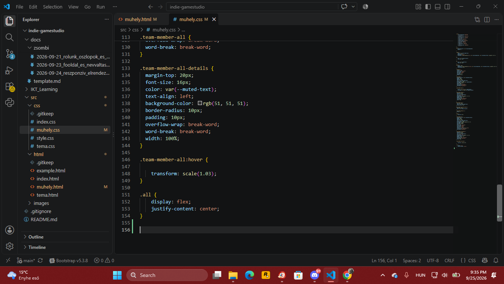
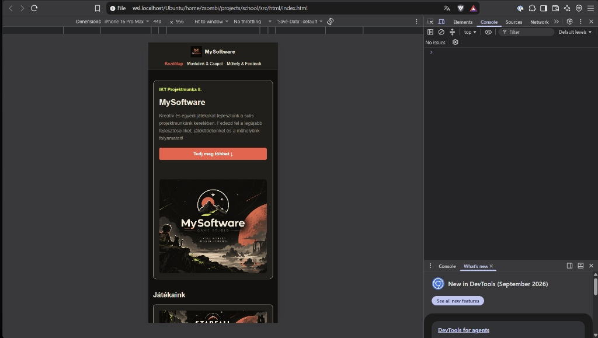

Műhely
Pintér Zsombor
Frontend & Git / Projektstruktúra
A weboldal vizuális alapjaiért és frontend megvalósításáért felelt. Kialakította az oldal fő megjelenését, kezelte a Git repository-t, valamint részt vett a közös elemek integrálásában és tesztelésében.
Főbb feladatok:
Frontend • UI kialakítás • Git • Integráció • Tesztelés
Fátyol András
Műhely & Források / Frontend
A Műhely & Források oldal felépítését és működését készítette el. A cél egy könnyen áttekinthető, strukturált felület létrehozása volt, amely illeszkedik a weboldal többi részéhez.
Főbb feladatok:
Frontend • UI kialakítás • Git • Integráció • Tesztelés
Kincses Marcell
Munkáink & Csapat / Frontend
A csapat és a projektek bemutatásáért felelős oldal megtervezésében és elkészítésében vett részt. Emellett segítette az egyes modulok összehangolását és a weboldal végső tesztelését.
Főbb feladatok:
Oldalstruktúra • Frontend • Tartalomelrendezés • Tesztelés
Közös munkáink
A projekt sikere a csapat szoros és hatékony együttműködésének eredménye. A kezdeti koncepcióalkotástól, az egységes arculatot adó színséma közös kiválasztásától és megalkotásától kezdve a drótvázak megtervezésén át a végleges megvalósításig a csapattagok kéz a kézben dolgoztak együtt. A közös ötletelések, a rendszeres kód-felülvizsgálatok (code review) és a folyamatos tesztelések mind biztosították, hogy a weboldal modern, vizuálisan harmonikus és megbízható legyen. A projekt minden egyes fázisában – a fejlesztéstől a karbantartásig – mindannyian aktívan kivették a részüket, egyesítve egyéni erősségeiket a közös cél elérése érdekében.
4 lépéses munkafolyamat
- 1. Tervezés és koncepció: Közös ötletelés, drótvázak elkészítése és az egységes arculat (színek, CSS változók) meghatározása[cite: 1, 2].
- 2. Alapok és környezet: Projektstruktúra kialakítása, Git repository beállítása, valamint a globális HTML/CSS alapok megírása.
- 3. Moduláris fejlesztés: A feladatok felosztása a csapattagok között (Kezdőlap, Csapat, Műhely frontend részek) az egyéni erősségek alapján[cite: 1].
- 4. Integráció és tesztelés: A kódok összefésülése (merge), a reszponzivitás és a böngészőkompatibilitás ellenőrzése, hibajavítás[cite: 1].
Mit tanultunk?
A projekt során nagyot fejlődtünk a Git alapú verziókövetésben és az együttműködésben. Elsajátítottuk a reszponzív webdesign alapjait, és megtanultuk a böngésző fejlesztői eszközeit (DevTools) használni a hibakereséshez és a mobilnézetek teszteléséhez.
Képeink a weboldal kódolás közben
Pillanatképek a CSS kódolásáról VS Code-ban, valamint az oldal mobilos nézetének teszteléséről:

